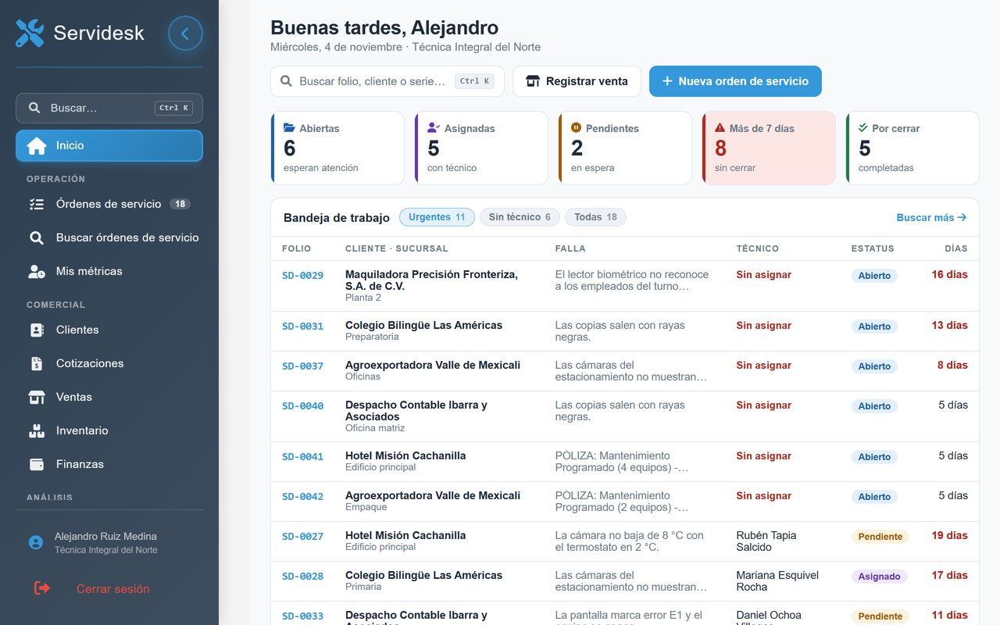
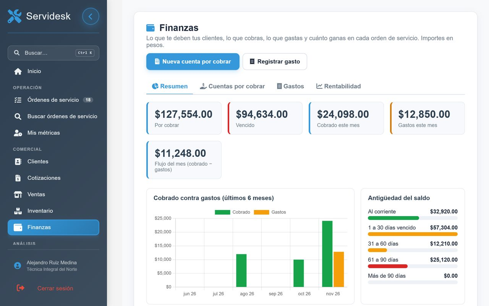

Tus órdenes de servicio, tus técnicos y tu cobranza en un solo lugar
Deja el papel, el Excel y los chats sueltos. Servidesk lleva cada servicio desde el reporte hasta el cobro, y te avisa cuándo toca el próximo mantenimiento.
Sin tarjeta · Sin instalar nada · Con tus datos desde el primer día

¿Te suena familiar?
Órdenes que se pierden
Los reportes llegan por WhatsApp, se anotan en una libreta y nadie sabe bien qué falta por atender.
Refacciones que no se cobran
El técnico instala la pieza, pero la cotización nunca se hace o se hace semanas después.
Clientes que pagan tarde
No hay un lugar donde ver quién debe, cuánto y desde cuándo.
Todo lo que tu empresa de servicio necesita
Todos los planes incluyen todos los módulos.
Órdenes de servicio
Cada reporte con folio, técnico asignado, estatus y fotos o documentos de evidencia. Sabes qué está abierto, qué está atrasado y quién lo trae.
Mantenimiento que no se olvida
Registra los equipos de cada cliente con su periodicidad. El sistema abre solo la orden del preventivo 10 días antes de que toque.
Cotizaciones en PDF
Con tu logo, fotos de producto y versiones. Y si el técnico ya instaló antes de la autorización, cotizas en un clic lo que se usó.
Inventario de refacciones
Existencias, mínimos y kárdex. Lo que el técnico usa en una orden se descuenta solo y queda ligado al servicio.
Cobranza y gastos
Cuentas por cobrar con vencimientos, cobros parciales, gastos por orden y estado de cuenta para mandarle a tu cliente.
Estadísticas y rentabilidad
Tiempos de cierre contra tu meta, carga por técnico y cuánto te dejó cada orden y cada cliente.
Funciona en el celular
Tus técnicos lo usan desde el navegador del teléfono. No hay nada que instalar.
Roles y permisos
Administrador, supervisor, administrativo y técnico. Cada quien ve lo suyo, y todo cambio queda en el historial.
Arrancas con tus datos
Sube tus clientes, sus equipos y tu catálogo desde Excel. Nada de capturar uno por uno.
Cada servicio con su historia completa
Quién lo reportó, qué falla tenía, qué técnico fue, qué hizo, qué piezas usó y las fotos de evidencia. Todo en la misma orden.
- Folio propio y el número de reporte de tu cliente
- Varios técnicos por orden
- Fotos, videos y documentos desde el celular
- Aviso de las órdenes que pasan de tu meta de días

Sabes quién te debe y cuánto te deja cada servicio
Convierte una cotización aprobada en cuenta por cobrar, registra los pagos parciales y manda el estado de cuenta a tu cliente.
- Antigüedad del saldo y clientes que más deben
- Gastos ligados a cada orden de servicio
- Rentabilidad por orden y por cliente
- Exporta a CSV para tu contador

Listo el mismo día
Regístrate
Crea tu cuenta en un minuto y pon tu logo y tus colores. Así lo ven tus técnicos y tus clientes.
Sube tus datos
Importa desde Excel tus clientes, sus equipos y tu catálogo de refacciones y servicios.
Manda la primera orden
Da de alta a tus técnicos y asígnales su primera orden de servicio desde la computadora o el celular.
Hecho para empresas que dan servicio en campo
Si tu empresa manda técnicos a instalar, reparar o dar mantenimiento a equipos, Servidesk es para ti.
Un precio claro, sin plazo forzoso
Prueba 15 días gratis con todas las funciones. Después eliges el plan según el número de usuarios.
Precios en pesos mexicanos. Pago mensual o anual por transferencia.
Preguntas frecuentes
¿Necesito instalar algo?
No. Servidesk funciona en el navegador de la computadora y del celular. Tú y tus técnicos entran con su usuario y contraseña.
¿Cuánto tarda en estar listo?
El mismo día. Te registras, pones tu logo, subes tus clientes y equipos desde Excel y das de alta a tus técnicos.
¿Puedo subir mis datos de Excel?
Sí. Descargas la plantilla de clientes, de equipos o de catálogo, la llenas, la guardas como CSV y la subes. Antes de guardar ves una vista previa con los errores marcados.
¿Servidesk factura?
Servidesk no timbra facturas. Sigues facturando con tu sistema de siempre y en Servidesk anotas el folio o UUID de la factura en la cuenta por cobrar, para llevar la cobranza.
¿Mis datos están separados de otras empresas?
Sí. Cada empresa tiene su información aparte, y cada usuario solo ve los módulos que su rol tiene permitidos.
¿Qué pasa al terminar la prueba?
Eliges un plan y pagas por transferencia. Tu información se conserva completa. Si no contratas, la cuenta pasa a solo lectura y después se suspende; tu información no se borra de inmediato.
¿Hay plazo forzoso?
No. Pagas mes a mes, o por año si quieres ahorrar.
Pruébalo con tus propios datos
Regístrate, sube tus clientes desde Excel y manda la primera orden de servicio hoy mismo. Sin tarjeta y sin instalar nada.